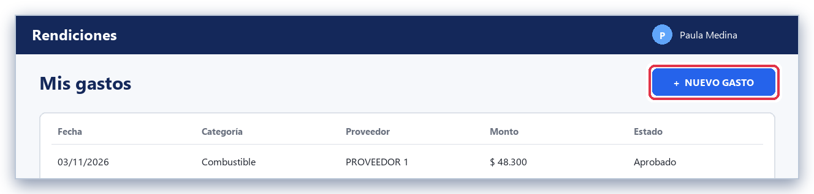
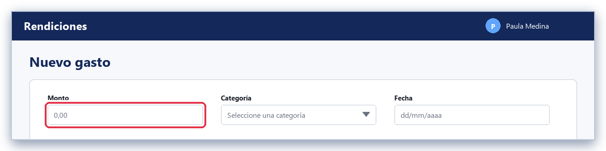
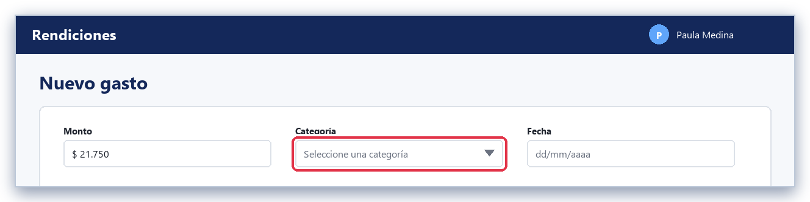
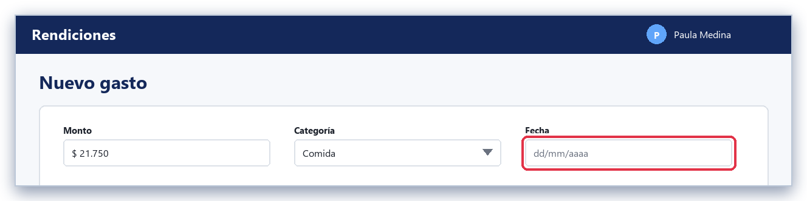
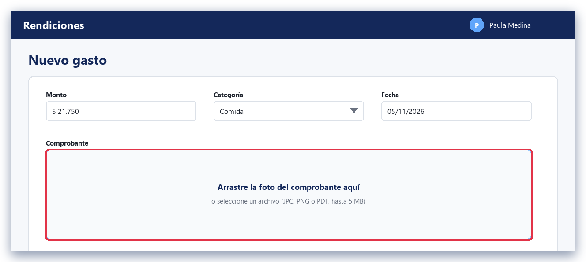
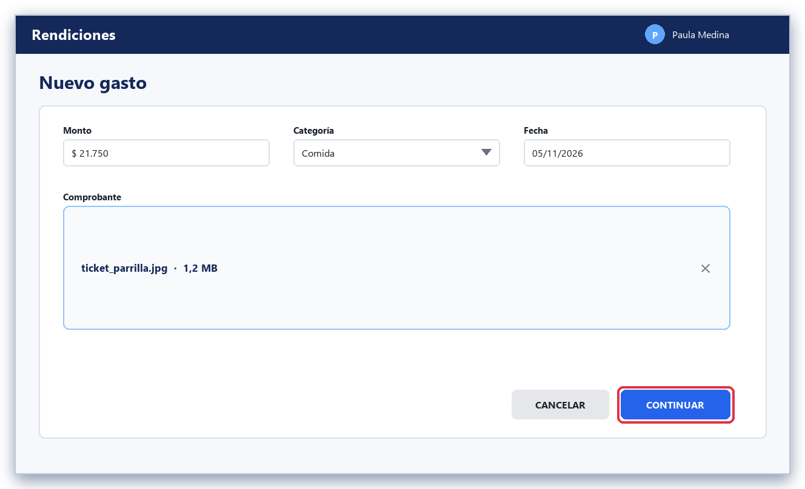
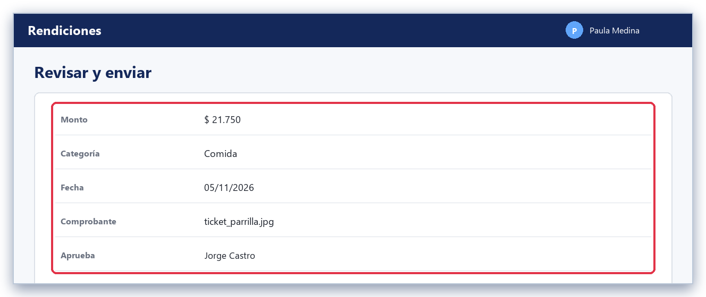
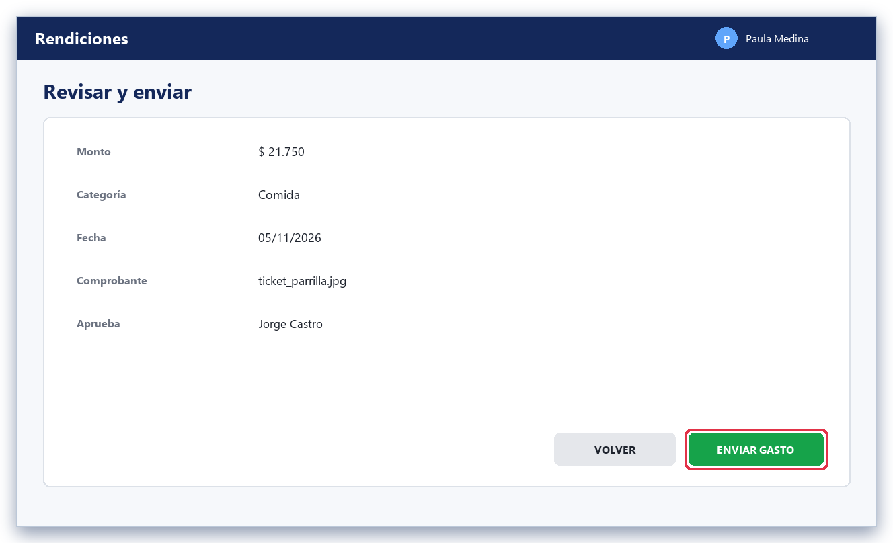
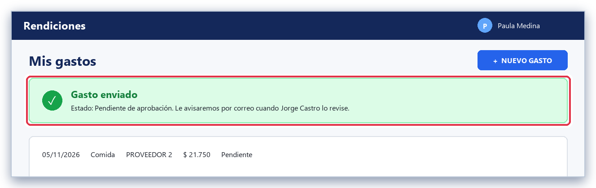

1Completar los datos
-
En Mis gastos, seleccione NUEVO GASTO.

-
En Monto, escriba el importe del gasto.

-
En Categoría, seleccione la categoría en la lista.

-
En Fecha, escriba la fecha del gasto con el formato dd/mm/aaaa.

2Adjuntar el comprobante
Nota
- El archivo puede ser JPG, PNG o PDF, de hasta 5 MB.
- En lugar de arrastrar la foto, puede seleccionar un archivo.
-
En Comprobante, arrastre la foto del comprobante.

-
Seleccione CONTINUAR.

3Revisar y enviar
-
En Revisar y enviar, compruebe los datos.

Si ve algo distinto- Un dato está mal
- Seleccione VOLVER y corrija el dato.
-
Seleccione ENVIAR GASTO.

el aviso Gasto enviado en Mis gastos.
Nota
El gasto queda en estado Pendiente de aprobación. Rendiciones le avisa por correo cuando su aprobador lo revisa.